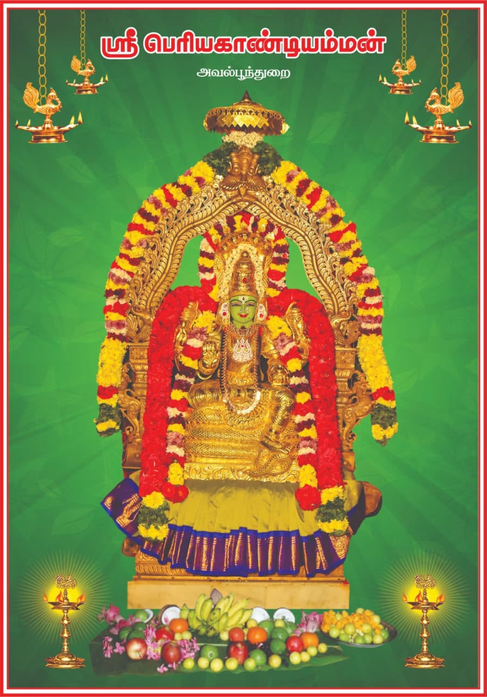
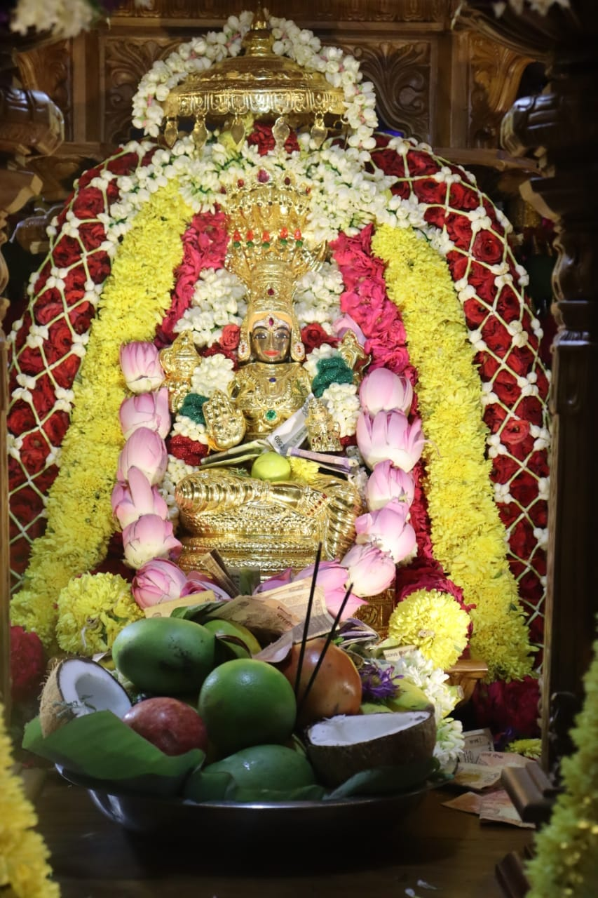
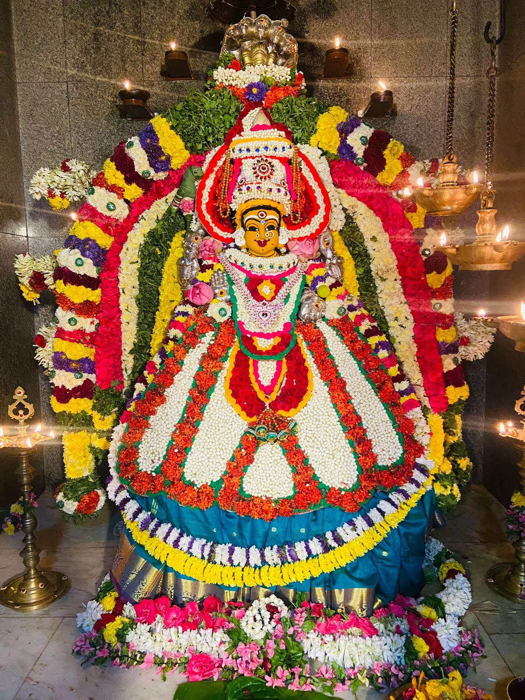
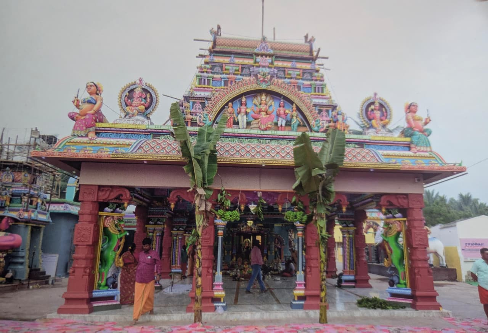
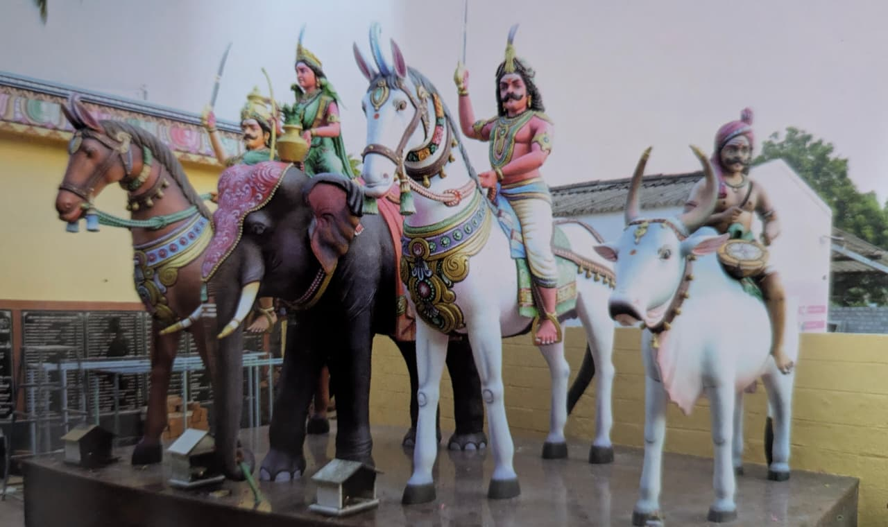
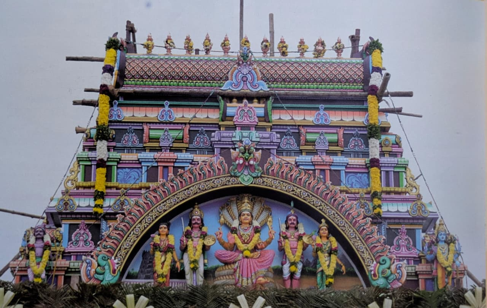
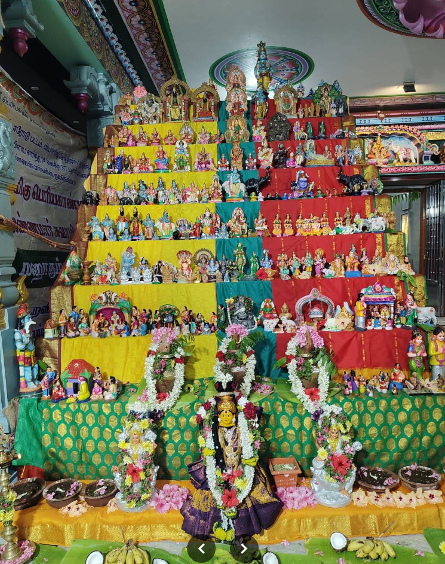
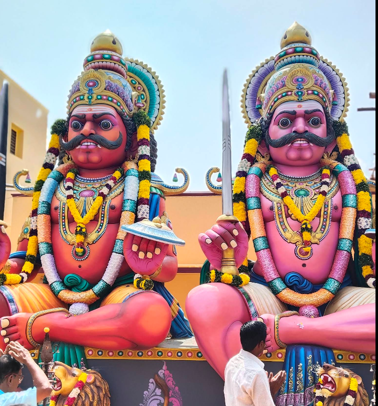
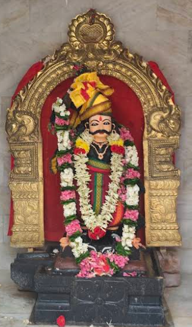

முகப்பு › புகைப்படங்கள்
அம்பாள் திவ்ய தரிசனம்
படத்தைத் தொட்டு பெரிதாகத் தரிசிக்கலாம் • ← → மூலம் அடுத்த தரிசனம்

⛶கோவில் ராஜகோபுரம்
 ⛶
⛶ஸ்ரீ பெரியகாண்டி அம்மன் அலங்காரம்

⛶திருக்கோவில் மூலஸ்தானம்
 ⛶
⛶திருத்தேர் (ரதம்) உற்சவம்

⛶மஹா கும்பாபிஷேகம் விழா

⛶திருத்தேர் (ரதம்) உற்சவம்

⛶திருத்தேர் (ரதம்) உற்சவம்

⛶திருத்தேர் (ரதம்) உற்சவம்

⛶திருத்தேர் (ரதம்) உற்சவம்

⛶திருத்தேர் (ரதம்) உற்சவம்

⛶திருத்தேர் (ரதம்) உற்சவம்